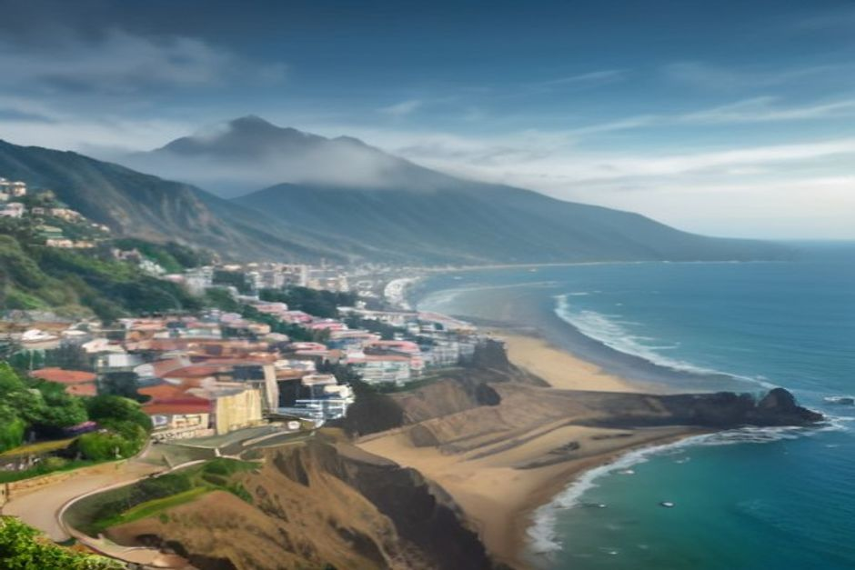

Si busca los feriados de Madeira en 2026 o se pregunta si hoy es festivo en Funchal, aquí tiene el calendario completo, con una buena noticia: la isla trabaja para el visitante incluso en día festivo, y solo conviene vigilar el banco, la farmacia y las oficinas.
Los portugueses dicen feriado donde en España decimos festivo, y es la palabra que verá en carteles, en las webs de los ayuntamientos y en las puertas de las tiendas. En esta guía usamos las dos. Madeira comparte el calendario nacional de Portugal y le suma fechas propias, así que el número de días de cierre es algo mayor que en el continente.
Calendario de feriados en Madeira 2026, mes a mes
Estas son las fechas que le interesan, con el día de la semana para que vea de un vistazo cuáles caen en fin de semana:
- 1 de enero, jueves: Año Nuevo.
- 2 de abril, jueves: Día de la Autonomía de Madeira (solo en la región).
- 3 de abril, viernes: Viernes Santo.
- 5 de abril, domingo: Domingo de Pascua, que también es festivo nacional pero cae en domingo.
- 25 de abril, sábado: Día de la Libertad.
- 1 de mayo, viernes: Día del Trabajador.
- 4 de junio, jueves: Corpus Christi.
- 10 de junio, miércoles: Día de Portugal.
- 1 de julio, miércoles: Día de Madeira (solo en la región).
- 15 de agosto, sábado: Asunción de la Virgen.
- 21 de agosto, viernes: Día de la Ciudad de Funchal (solo en el municipio).
- 5 de octubre, lunes: Día de la República.
- 1 de noviembre, domingo: Todos los Santos.
- 1 de diciembre, martes: Restauración de la Independencia.
- 8 de diciembre, martes: Inmaculada Concepción.
- 25 de diciembre, viernes: Navidad.
En total son 13 festivos nacionales, más los dos regionales de Madeira y el municipal de Funchal. Los de Año Nuevo a Navidad cierran bancos, oficinas públicas, colegios y buena parte del pequeño comercio.
Los feriados que solo existen en Madeira y en Funchal
Aquí está lo que diferencia a la isla del resto de Portugal. El 2 de abril se celebra el Día de la Autonomía, que recuerda la constitución de 1976 con la que el archipiélago obtuvo su autogobierno. El 1 de julio es el Día de Madeira (Dia da Região), que conmemora el desembarco portugués en Machico en 1419. Ninguno de los dos se celebra en el continente ni en las Azores.
El 21 de agosto es el Día de la Ciudad de Funchal. Es un festivo municipal: afecta a la capital y no a toda la isla, de modo que en otro municipio puede encontrar las oficinas abiertas ese día.

¿Hoy es feriado en Madeira? Cómo comprobarlo en un minuto
Compare la fecha de hoy con la lista de arriba y recuerde tres cosas. Primero, en Madeira cuentan los festivos nacionales, los dos regionales y, si está en la capital, el de Funchal. Segundo, si el festivo cae en sábado o domingo no se traslada al lunes, de modo que no hay día extra. Tercero, aunque sea festivo, lo que necesita un viajero (comer, pasear, alojarse, salir al mar) sigue funcionando.
Si le queda por delante lo que resta de 2026, los próximos son el 1 de noviembre (domingo, sin día libre añadido), el 1 y el 8 de diciembre (ambos martes) y la Navidad, un viernes.
Qué cierra en un día festivo en Madeira
Cierran los bancos, las oficinas públicas y los correos, así como muchos comercios independientes. La mayoría de las farmacias funciona solo por el sistema de guardias, es decir, una de turno por zona. Los grandes supermercados suelen abrir con horario reducido en lugar de cerrar del todo, y el transporte público circula con un horario parecido al de los domingos.
La consecuencia práctica es sencilla: si necesita sacar dinero en ventanilla, enviar un paquete o hacer un trámite oficial, no lo deje para un festivo. Para todo lo demás, no cambia nada.
Qué sigue abierto: restaurantes, mercado y excursiones
El turismo no se toma el día libre. Los restaurantes, las cafeterías, los hoteles, el Mercado dos Lavradores y la Zona Velha mantienen su horario. Los taxis, el alquiler de coche y las principales atracciones funcionan como cualquier otro día. Funchal incluso suele verse más animado, porque los vecinos están en la calle en vez de en el trabajo.
Si va a comer en la Zona Velha un festivo por la noche, reserve con algo de antelación: es precisamente cuando los madeirenses salen a cenar.
Puentes de 2026: qué festivos alargan el fin de semana
Para quien viene desde España, este es un detalle conocido: un festivo en martes o jueves invita a "hacer puente", y los portugueses lo llaman ponte. Lo que no hacen es trasladar el festivo al lunes, así que cuando cae en sábado o domingo, se pierde.
- El 5 de octubre, lunes, ya forma por sí solo un fin de semana largo.
- El 1 de julio, miércoles, queda a mitad de semana, sin puente claro.
- El 15 de agosto, sábado, cae en fin de semana y no añade un día libre.
- El 4 de junio, jueves, y el 1 y 8 de diciembre, martes, son los candidatos naturales a puente: algunos negocios y muchos vecinos cogen el viernes o el lunes.
En esos fines de semana largos hay más gente local en las carreteras de la costa y en los miradores. Conviene madrugar un poco o elegir bien el momento del día.
El Día de Madeira, 1 de julio: el festivo que sí merece planificar
Si pudiera escoger un feriado para coincidir con él, sería este. La bahía de Funchal se llena de fuegos artificiales, desfiles y conciertos gratuitos, y cae a principios de verano, cuando el mar empieza a calentarse. Lo más cómodo es dejar la noche para la fiesta y reservar las horas de luz para la costa.
Ese tipo de día se disfruta mejor con un plan flexible: por la mañana el mar, por la noche la ciudad.
Carnaval: no es festivo oficial, pero casi
El Martes de Carnaval (17 de febrero de 2026) no es un festivo nacional obligatorio, pero Madeira lo trata como tal por costumbre. Los colegios cierran, muchas oficinas dan el día libre y Funchal celebra su gran desfile por la Avenida do Mar esa tarde y esa noche. El lunes anterior algunos negocios cierran antes de lo habitual. Si viaja en febrero, compruebe el horario de cada sitio en lugar de darlo por hecho.
Un festivo en el mar: cómo se vive desde un barco
Con oficinas y comercios cerrados, las carreteras y los miradores reciben más tráfico local, pero el mar es el mismo de siempre. Las salidas de Chifbay funcionan en festivos igual que cualquier otro día, y el barco es solo para su grupo, hasta 5 personas, con dos patrones de Madeira.
La excursión de día sale a las 10:00 o a las 14:00 y pasa por Câmara de Lobos y Cabo Girão, con baño y tablas de paddle en Fajã dos Padres: 2 h 30 hasta Ribeira Brava por 500 EUR, o 3 h hasta Ponta do Sol por 600 EUR. El atardecer en barco sale 1 h 15 antes de la puesta de sol, todo el año: 2 h hasta Cabo Girão por 400 EUR, o 2 h 30 hasta Ribeira Brava por 500 EUR, sin parada para bañarse. Los precios son por el barco entero, no por persona, y llevan comida y bebida a bordo, vídeo 360° con Insta360, imágenes de dron si el tiempo lo permite y fotos con cámara de verdad.
Si el plan cambia, la cancelación es gratuita hasta 24 horas antes de la salida. Encontrará el resto de detalles en la información práctica y en todas las experiencias.
Ningún feriado de Madeira es motivo para evitar una fecha. En todo caso, es un motivo para estar en Funchal esa noche.
En resumen: mire el calendario si necesita un banco o una oficina, y olvídese de él si viene por la costa, la mesa o el mar.